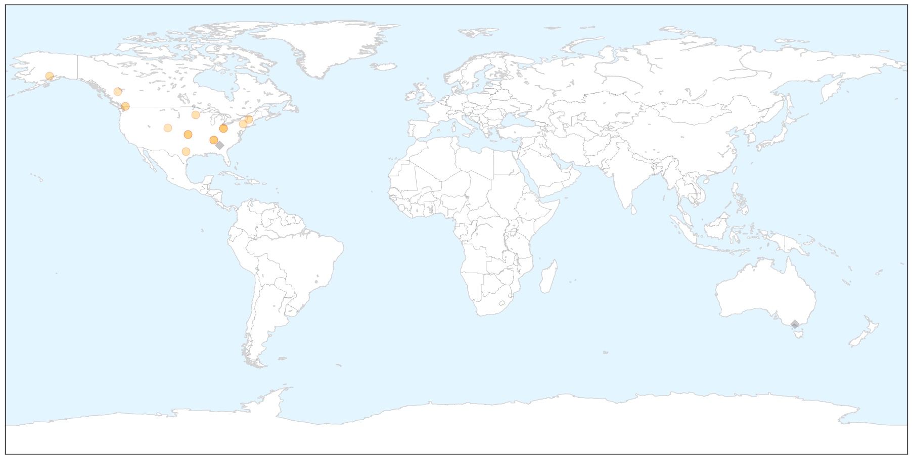

Toggle navigation
Early Warning
Return to Dashboard
Points of Interest
About the Project
Influenza
Dec 08, 2014
Compare to:
-
Dengue Fever
Hemmorhagic Fever
Mold/Fungal Infection
Meningitis
Pertussis / Whooping Cough
Middle East Respiratory Syndrome
Cholera
Hepatitis
Chikungunya
Yellow Fever
Bubonic Plague
West Nile Virus
Swine Flu
Ebola
Measles
Unknown
Mumps
30 Day Trends
Web: 7
alerts
, 0
warnings
Twitter: 4
alerts
, 0
warnings
Top Articles:
0.999
Local health officials express concern that flu season might be more severe this year
0.999
Flu has arrived in Estes Park
0.999
Ohio: Flu hospitalizations in 2014 more than double same period last year
0.999
National Influenza Vaccination Week - IronMountainDailyNews.com
0.996
Health department urges flu vaccination
0.994
Health Department Recognizes National Influenza Week, Offers Flu Vaccinations
0.981
Does Flu Vaccine Reduce Kids' ED Visits?
0.968
Flu for the holidays? There's still time to get vaccinated
0.946
Childhood influenza burdens healthcare despite reported increases in vaccination
0.914
Flu clinic offers chance to beat the bug
0.850
Canada Continues Avian Flu Investigation
0.847
Weekly Overview: Disease Control in Farm Animals is Cheaper Than a Pandemic
0.811
Spike In Serious Flu Cases In Larimer County Indicates Statewide Trend « CBS Denver
0.766
Avian flu outbreak prompts restrictions on domestic bird movement
0.599
140,000 B.C. chickens and turkeys lost to avian flu outbreak
Top Tweets:
0.690
It's Nat'l Influenza Vax Week! Have you gotten a flu vax yet? While viruses are spreading it's not too late to getafluvax NIVW2014
0.623
Flu Shots: Influenza A (H3N2) virus drift affecting vaccination effectiveness | Outbreak News Today
http://t.co/HDUL0XDsno
0.581
RT: It's Nat'l Influenza Vax Week! Have you gotten a flu vax yet? While viruses are spreading it's not too late to getafluvax NI…
Web/News Articles
X
Tweets
X
Article Locations
X

Article Confidences
X